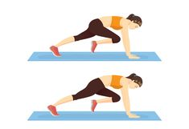

10 Übungen für das perfekte Cardio Training zuhause
- 6 Cardio Übungen für zu Hause - Gymondo
- Ausdauertraining für Zuhause: 20 Übungen ohne Geräte
01.05.2020 — - 20 Cardio übungen-Ideen | fitness workouts, fitnessübungen .
- Für diese 5 Cardio-Übungen brauchst du kein Zubehör
- Cardio Training: Vorteile, Methoden und Herzfrequenz
- Abnehmen: Diese 5 Cardio-Übungen verbrennen noch mehr .
- Probiere die 5 besten Cardio-Übungen im Fitnessstudio aus .
- 10 Übungen für das perfekte Cardio Training zuhause
- Cardio-Training zu Hause - Uebungen.ws
- Besser als Laufen: 5 Cardio-Übungen, um mehr Kalorien zu .
Close Start Good Carbs Abnehmen Selbstbewusstsein Gesundheit Ernährung Fitness Entspannung Cardio Yoga Blog Empfehlungen Über mich Impressum Datenschutzerklärung Menu Skip to right header navigation Zur Hauptnavigation springen Skip to secondary navigation Skip to main content Zur Hauptsidebar springen
Übernimm die Verantwortung für deine Gesundheit
Start Gesundheit Ernährung Fitness Entspannung Abnehmen Blog Empfehlungen Über mich Good Carbs Suche Ernährung Abnehmen Fitness Cardio Entspannung Yoga Startseite » Blog » 10 Übungen für das perfekte Cardio Training zuhause10 Übungen für das perfekte Cardio Training zuhause
4K Shares Twittern Pin Teilen WhatsApp TeilenCardio Training kann man nur draußen trainieren? Falsch! Ich zeige dir, wie du ein intensives und effektives Cardio Training zuhause durchführen kannst.
Du kurbelst deinen Stoffwechsel kräftig an und dein Körper schaltet mit Cardio Training in den Fettverbrennungs-Modus . So kann dich das Ausdauertraining beim Abnehmen wirkungsvoll unterstützen.
In diesem Artikel erfährst du
für wen Cardio Training zuhause geeignet ist welche Trainingsformen sich für ein Ausdauertraining zu Hause eignen welche Cardio Übungen sinnvoll sind ob sich der Einsatz von Geräten beim Cardio Training zuhause lohnt
Cardio Training zuhause – bist du der Typ dazu?
Inhaltsverzeichnis
Cardio Training zuhause – bist du der Typ dazu? Abnehmen mit Cardio Training Welche Methoden eignen sich, um Cardio Training zuhause durchzuführen? Die Dauermethode Die Wiederholungsmethode Die Intervallmethode Cardio Training zuhause – HIIT ohne Geräte Fatburner Ausdauertraining zuhause Seil springen Jumping Jacks / Hampelmann Mountain Climbers / Bergsteiger Kniehebelauf Push UPs /Liegestütze Anfersen Squats / Kniebeuge Lunges / Ausfallschritt Burpees Jumping Squats Crunches mit Punch Reverse Crunches Moderates Cardio Training zuhause Fitnessgeräte für das Cardiotraining zu Hause Cardio Training zuhause mit Video-Anleitung FazitWelche Ausdauersportart liegt dir am meisten? Walking, Nordic Walking, Jogging, Radfahren oder Schwimmen? Alle haben eins gemeinsam: du kannst diese Art von Cardio Training nicht zuhause durchführen.
Und außerdem brauchst du für all diese Sportarten relativ viel Zeit. Wenn du nicht so viel Zeit investieren möchtest, ist Cardio Training zuhause die perfekte Alternative.
In der heutigen Zeit kommt es oft vor, dass wir mit Vollgas von Termin zu Termin hetzen und abends total gestresst nach Hause kommen. In unserem Körper werden Stresshormone ausgeschüttet, die zur Folge haben, dass der Puls steigt, die Muskulatur sich anspannt und die Atmung schneller wird.
Durch ein kürzeres Cardio Training zuhause kannst du deinen Körper wunderbar „entstressen“ und die Stresshormone viel schneller wieder abbauen , als wenn du dich einfach nur auf die Couch legst.
Du förderst nachhaltig deinen Fitnesszustand und deine Gesundheit, wenn du deine Ausdauer über einen längeren Zeitraum trainierst.
Wenn du mehr über Cardiotraining erfahren möchtest, kannst du hier weiterlesen: Cardiotraining – Auswirkungen auf deinen Körper .
Cardio Training – zuhause oder im Freien – ist wichtig für deine Gesundheit. Gerade das Cardio Training zuhause kann eine willkommene Abwechslung sein, wenn du keine Lust auf stundenlanges monotones Joggen hast.
Auch Yoga kann eine tolle Abwechslung sein. Probiere doch mal, so viele Sonnengrüße wie möglich durchzuführen. Ich kann dir versichern, du wirst ganz schön ins Schwitzen kommen.
Abnehmen mit Cardio Training
Oder bist du jemand, der eigentlich gar keine Lust auf Ausdauertraining hat, sondern du willst einfach nur deinen Stoffwechsel ankurbeln , um abzunehmen ? Dann bietet sich Cardio Training zu Hause hervorragend an, weil du bereits innerhalb kurzer Zeit ein effektives Training durchführen kannst.
Auch wenn ich Cardio Training grundsätzlich empfehlen kann, so rate ich dir doch dringend dazu, dich von einem Arzt untersuchen zu lassen, falls du erst mit über 40 Jahren mit dem Ausdauertraining beginnen möchtest. Das gilt auch, wenn du irgendwelche gesundheitlichen Probleme oder Einschränkungen hast.
Stark Übergewichtigen rate ich eher von einem intensiven Cardio Training ab. Starte stattdessen mit moderaten „Ausdauer-Einheiten“ in Form von Spaziergängen , die du mit der Zeit immer weiter ausdehnst. Erst wenn dein Gewicht etwas gesunken ist, kannst du ein Cardio-Programm beginnen, welches das Abnehmen unterstützt.
Dafür sind allerdings andere Methoden besser geeignet als ein intensives Cardio Training zuhause.
Was uns zum nächsten Punkt bringt. Welche Ausdauermethoden gibt es überhaupt und welche bieten sich für das Cardio Training zuhause am besten an?
Welche Methoden eignen sich, um Cardio Training zuhause durchzuführen?
Die Dauermethode
Cardio Training zuhause auf dem TrampolinDie wohl bekannteste Methode, um deine Ausdauer zu trainieren, ist die „Dauermethode“. Dabei wird eine andauernde Belastung ohne Unterbrechung über einen längeren Zeitraum (20 Minuten bis 2 Stunden) durchgeführt.
Die Dauermethode eignet sich als Cardio Training zuhause für alle, die durch eine moderate Trainingseinheit bei geringer bis mittlerer Intensität Stress abbauen möchten.
Ist dein Ziel primär das Abnehmen, kannst du diese Ausdauermethode mithilfe eines Springseils durchführen. Oder du hüpfst auf dem Trampolin .
Die Wiederholungsmethode
Intensive Belastungen wechseln sich mit vollständigen Pausen ab. Damit wird vor allem die Mittelzeitausdauer trainiert. Diese Wettkampfmethode wird vor allem angewendet, um den Körper an die wettkampfspezifische Komplexbelastung zu gewöhnen.
Für das Cardio Training zuhause eignet sich diese Methode nicht.
Die Intervallmethode
Bei der Intervallmethode wechseln sich relativ kurze Phasen der Be- und Entlastung . Dabei sind die sogenannten „lohnenden“ oder „aktiven“ Pausen kürzer als die Belastungsphasen. Je nach Trainingszustand und -ziel kannst du die Belastungsdauer zwischen 10 Sekunden bis hin zu drei Minuten wählen.
Die „Tabata-Methode“ empfiehlt 8 Belastungsphasen mit je 20 Sekunden hochintensivem Einsatz, dazwischen nur 10 Sekunden Pause. Diese Methode ist auch als HIIT bekannt: Hoch-Intensives-Intervall-Training.
Dieses Cardio Training ist optimal fürs Abnehmen geeignet und regt den Stoffwechsel kräftig an.
Alle Arten von Intervallmethoden stärken das Herz-Kreislaufsystem ganz besonders und eignen sich durch den relativ geringen Zeitaufwand hervorragend für das Cardio Training zuhause.
Neben den beschriebenen Ausdauermethoden gibt es weitere, die sich aber nicht eignen, um dein Cardio Training zuhause durchzuführen.
Dein Trainingsziel bestimmt also die Wahl der Methode. Welche Übungsformen eignen sich am besten für das Cardio Workout zuhause?
Cardio Training zuhause – HIIT ohne Geräte
Schnell Kalorien verbrennen kannst du durch ein kurzes, aber sehr intensives HIIT (High-Intensity-Intervall-Training) am effektivsten. Dafür benötigst du keine Geräte. Bei deinem Cardio Training zuhause kannst du aber wahlweise Gewichte einsetzen, um die Belastung zu intensivieren.
Die besten Fitnessgeräte für zuhause habe ich für dich zusammengestellt, mit denen du dein eigenes Home-Gym aufbauen kannst.
Damit du bei deinem Cardio Training zu Hause in kurzer Zeit den Fettstoffwechsel ankurbelst, musst du die Übungen fast ohne Pause und sehr schnell ausführen.
Um möglichst viele unterschiedliche Muskelgruppen beim Workout zu aktivieren, solltest du ein Zirkeltraining machen.
Das heißt, du machst verschiedene Übungen immer eine bestimmte Zeit lang und wechselst dann nach einer kurzen Pause zur nächsten Übung. Auf diese Weise kannst du eine gute Kondition aufbauen zuhause.
Fatburner Ausdauertraining zuhause
Um deinen Körper auf die bevorstehende Belastung vorzubereiten, wärme dich etwas auf. Beginne dein Cardio Training zuhause, indem du einfach auf der Stelle läufst bis du merkst, dass dein Kreislauf in Fahrt kommt. Dann fängst du mit dem Zirkeltraining an.
Anfänger : 20 Sekunden Belastung – 10 Sekunden Pause (weitergehen, lockern)
1 Durchgang dauert 5 Minuten (+ 2 Zusatzübungen = insg. 6 Minuten)
Führe möglichst 2-3 Durchgänge durch.
Fortgeschrittene : 1 Minute Belastung – 30 Sekunden Pause
1 Durchgang dauert 15 Minuten (+ 2 Zusatzübungen = insg. 18 Minuten)
Führe je nach Lust und Laune beliebig viele Durchgänge durch.
Seil springen
Cardio Training zuhause auf dem Trampolin Spring auf der Stelle und stell dir vor, du hältst dabei ein Seil in der Hand. (Natürlich kannst du auch wirklich ein Seil dazu nehmen). Achte darauf, dass die Schultern nicht verkrampfen und du aufrecht bleibst.Jumping Jacks / Hampelmann
Stell dich aufrecht hin, spann Bauch und Po fest an. Spring hoch, öffne dabei deine Beine und schließ sie beim nächsten Sprung wieder. Parallel dazu hebst du deine Arme seitlich hoch und klatscht sie über dem Kopf zusammen.Mountain Climbers / Bergsteiger
Gehe in den Liegestütz. Ziehe abwechselnd dein rechtes und linkes Bein zur Brust. Spann dabei deine Rumpfmuskulatur an und komm nicht mit dem Po nach oben. Je dynamischer und schneller du diese Übung machst, um so intensiver wird sie.Kniehebelauf
Lauf auf der Stelle. Zieh dabei die Knie abwechselnd nach vorne hoch. Achte darauf, dass du aufrecht bleibst.Push UPs /Liegestütze
Beuge in der Liegestützposition die Arme. Achte darauf, dass dein Körper eine Gerade bildet. Gehe nicht ins Hohlkreuz. Spanne dazu Bauch und Po fest an. Je langsamer du die Liegestütze durchführst, umso schwieriger ist die Übung. Wenn du keine normalen Liegestütze schaffst, kannst du dich auf die Knie stützen.Anfersen
Lauf auf der Stelle. Zieh dabei die Füße abwechselnd nach hinten – Richtung Gesäß – hoch. Achte darauf, dass du aufrecht bleibst.Squats / Kniebeuge
Stell dich aufrecht und etwas mehr als hüftbreit hin. Spann Bauch und Po fest an. Beug die Beine und stell dir vor, du setzt dich auf einen Stuhl. Achte darauf, dass die Knie immer über den Fußgelenken sind (nicht nach innen oder außen ausweichen). Verlagere das Gewicht auf die Fersen, lass deinen Oberkörper möglichst aufrecht. Zähle beim Runtergehen bis drei und komm dann wieder langsam – bis 3 zählen – in die Ausgangsposition. Streck aber die Knie nicht ganz aus.Lunges / Ausfallschritt
Stell dich aufrecht hin, spann Bauch und Po fest an. Mach mit dem rechten Bein einen großen Schritt nach vorn. Beuge beide Beine tief. Achte darauf, dass der Oberkörper aufrecht bleibt und das rechte Knie nicht über die Fußspitze hinausragt. Setze das hintere Knie nicht auf dem Boden auf. Komm zurück in die Ausgangsposition und wiederhole die Übung mit dem linken Bein.Burpees
Stell dich aufrecht hin. Spann den Bauch an und mach einen Squat (Kniebeuge). Stell die Hände vor dir auf den Boden und komm in den Liegestütz.Fortgeschrittene springen direkt in den Liegestütz. Mach dann einen Liegestütz, d.h. beug die Arme tief. Spring danach entweder in die Hocke oder mach nacheinander mit beiden Beinen einen Schritt nach vorne, um in die Hocke zu kommen. Spring dann hoch in die Luft und fang wieder von vorne an.
Jumping Squats
Stell dich aufrecht und etwas mehr als hüftbreit hin. Geh in die Knie, wie beim Skispringen. Achte darauf, dass die Knie immer über den Fußgelenken sind (nicht nach innen oder außen ausweichen). Spann Bauch und Po fest an, die Ellenbogen sind seitlich nach hinten gezogen. Schwing die Arme nach vorne oben und mach einen Strecksprung. Lande wieder etwas mehr als hüftbreit in der Skispringer-Ausgangsposition. Zusätzlich kannst du noch 1-2 Bauchmuskelübungen in dein Cardio Training zuhause einbauen, um den gesamten Körper zu trainieren.Crunches mit Punch
Cardio Training zuhause – Trainingsplan Lege dich auf den Rücken, zieh die Knie an und stell die Füße hüftbreit auf den Boden. Winkel die Arme an und balle die Fäuste. Spann den Bauch fest an und hebe den Oberkörper, bis die Schulterblätter den Boden nicht mehr berühren. Führe mit deiner rechten Hand einen Faustschlag am linken Knie vorbei aus. Lass dich zurücksinken, bis der Kopf den Boden fast berührt. Press dabei deinen unterer Rücken die ganze Zeit fest auf den Boden. Beim nächsten Hochkommen führe einen Faustschlag mit der linken Hand aus.Reverse Crunches
Lege dich auf den Rücken. Spanne den Bauch an und drücke deinen unteren Rücken auf den Boden. Alternativ kannst du dich auf die Ellenbogen stützen. Hebe die Beine vom Boden ab, die Knie leicht gebeugt. Beuge nun die Beine so, dass die Oberschenkel senkrecht nach oben zeigen und die Unterschenkel sich in einem 90-Grad-Winkel dazu befinden. Schwieriger wird es, wenn du die Beine beim Anheben fast gestreckt hältst. Lasse dann die Beine wieder sehr langsam (3 Sekunden) bis kurz vor dem Boden absinken.Moderates Cardio Training zuhause
Wenn dir ein intensives Intervalltraining nach einem langen Tag zu viel ist, möchtest du vielleicht eher ein moderates Ausdauertraining durchführen. Dabei können dich Fitnessgeräte unterstützen.
Fitnessgeräte für das Cardiotraining zu Hause
Beeindruckend effektiv, aber dennoch günstig, ist das gute alte Springseil . Es ermöglicht ein moderates, aber auch durchaus sehr intensives Cardio-Workout. Außerdem förderst du dadurch zusätzlich deine Koordination. Wenn du etwas mehr Platz hast, kannst du auch über den Kauf eines Fitness-Trampolins nachdenken. Durch das Springen werden ebenso wie beim Seilspringen viele Muskelgruppen gleichzeitig aktiviert und außerdem die Koordination verbessert. Eine Trainingseinheit von 20-30 Minuten – vielleicht vor dem Fernseher, verbrennt Kalorien und baut in deinem Körper jede Menge Stresshormone ab. Willst du mehr, kannst du dir natürlich auch einen Crosstrainer , ein Laufband , ein Rudergerät oder ein Fitnessrad zulegen. Viele tun das. Allerdings solltest du beim Kauf eines Fitnessgerätes wirklich auf Qualität achten, sonst wirst du nicht lange Spaß daran haben.Die besten Fitnessgeräte für zuhause helfen dir nicht nur, deine Ausdauer zu verbessern. Sie können dich beim Abnehmen unterstützen, helfen bei der Heilung von Verletzungen, bauen deine Muskeln auf und helfen dir beim Entspannen .
Cardio Training zuhause mit Video-Anleitung
Eine weitere großartige Möglichkeit bietet dir das Internet. Auf YouTube findest du Tausende an Mitmach-Videos . Bloß ist es manchmal ziemlich schwierig zu entscheiden, welche Cardio-Trainingseinheit etwas taugt und welche nicht.
Deshalb habe ich mich mal auf die Suche gemacht und die besten 10 Power-Workouts in einem Artikel zusammengefasst. Dort findest du auch die Links zu jedem einzelnen Video:
10 Power-Workouts, die mehr Fett verbrennen als Laufen
Fazit
Stelle die Cardio Übungen beliebig zusammen bei deinem Cardio Training zuhause. Mit nur wenigen Übungen kannst du sogar in 15 Minuten deine Kondition verbessern und etwas für deine Gesundheit tun.
Welche wichtigen Auswirkungen Ausdauertraining für deine Gesundheit hat, erfährst im Artikel Wie verändert Ausdauertraining deinen Körper .
Bist du bereit, die Verantwortung für deine Gesundheit zu übernehmen? Dann starte noch heute mit der 7-tägigen Entgiftungswoche oder gleich mit der 21-Tage-Abnehm-Challenge zum Aufbau gesunder Essgewohnheiten mit begleitendem Sportprogramm für ein dauerhaftes Wohlfühlgewicht.
4K Shares Twittern Pin Teilen WhatsApp Teilen
Über Franzi
Hallo! Mein Name ist Franzi und ich leite hier die Show bei Just One Life. Ich möchte dir dabei helfen, auch mit Ü40 gesund zu bleiben. Dein Gewicht spielt dabei eine entscheidende Rolle. Mit Ernährung, Bewegung und Entspannung bist du auf der Erfolgsspur.
Mein Wissen, das ich in einem abgeschlossenen Sportstudium und einer Ernährungsberater-Ausbildung erlangt habe, teile ich gerne mit dir.
Das interessiert dich vielleicht auch
Yoga und Sport: Solltest du Yoga vor oder nach dem Training machen?
Pflanzliches Protein 10 eiweißreiche Alternativen zu Fleisch
Warum nehme ich nicht ab, sondern zu? 13 Gründe
Stress bewältigen mit der 4A-Regel
Laufen zum Abnehmen 7 Schritte zur Gewichtskontrolle
Proteinpulver zum Abnehmen 9 wichtige Fragen beantwortet
Insulinresistenz & Abnehmen: Was du darüber wissen solltest
Ernährungsplan zum Entgiften: 3 Tage 7 Zutaten
10 Gründe, deinen Körper zu entgiften
Stress im Job 10 Tipps zur wirksamen Stressbewältigung
Leser-Interaktionen
Schreibe einen Kommentar Antworten abbrechen
Haupt-Sidebar
In der Mitte des Lebens verändert sich dein Körper. Das ist völlig normal, aber jetzt wird es Zeit, mehr für deine Gesundheit zu tun.
Das Gewicht spielt eine entscheidende Rolle dabei.
Übernimm die Verantwortung für deine Gesundheit. Du hast nur ein Leben.
Just One Life
Mehr über mich
Beliebte Beiträge
Aktuell
Yoga und Sport: Solltest du Yoga vor oder nach dem Training machen?
Pflanzliches Protein 10 eiweißreiche Alternativen zu Fleisch
Warum nehme ich nicht ab, sondern zu? 13 Gründe
Stress bewältigen mit der 4A-Regel
Impressum DatenschutzerklärungSite Footer
Copyright © 2021 Just One Life
Your link text